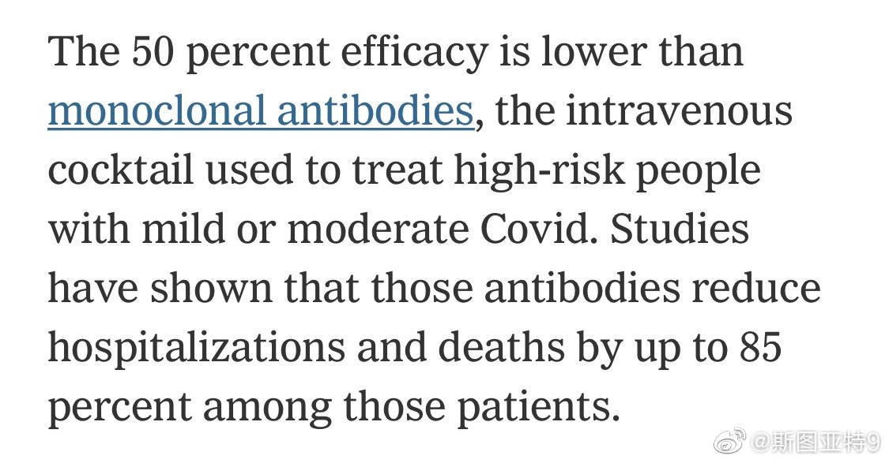

Walgreens和CVS很难预约到附近当天测新冠。去了那个Virus Geek的测试点，都完全没人不用排队。出结果的速度也还不错，上午9点测的晚上10点多就出结果了。不知道是不是因为Walgreens、CVS网点多大家喜欢就近？

斯图亚特9
2021-10-03
斯图亚特9
2021-10-03
默克这药原来这么贵。有单克隆抗体价格的1/3……而单克隆抗体可以避免85%的重症和死亡。
- 
斯图亚特9
2021-10-03
莫克的新冠药一出来疫苗股大跌。是说一个降低住院和死亡率一半的就能让大家都不打疫苗了？